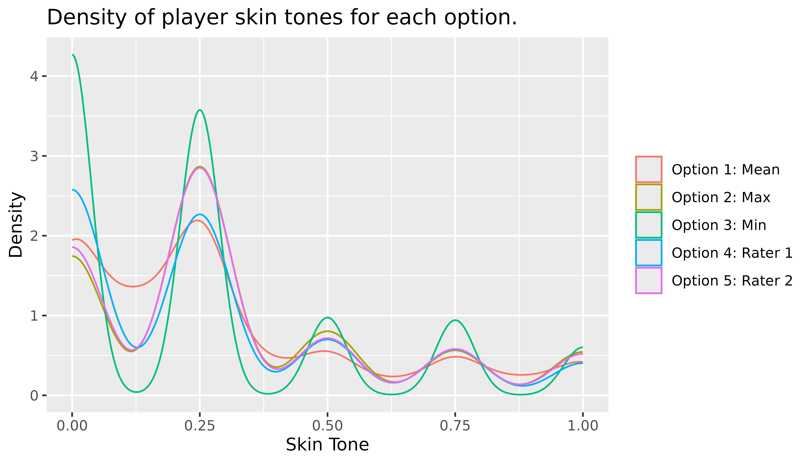
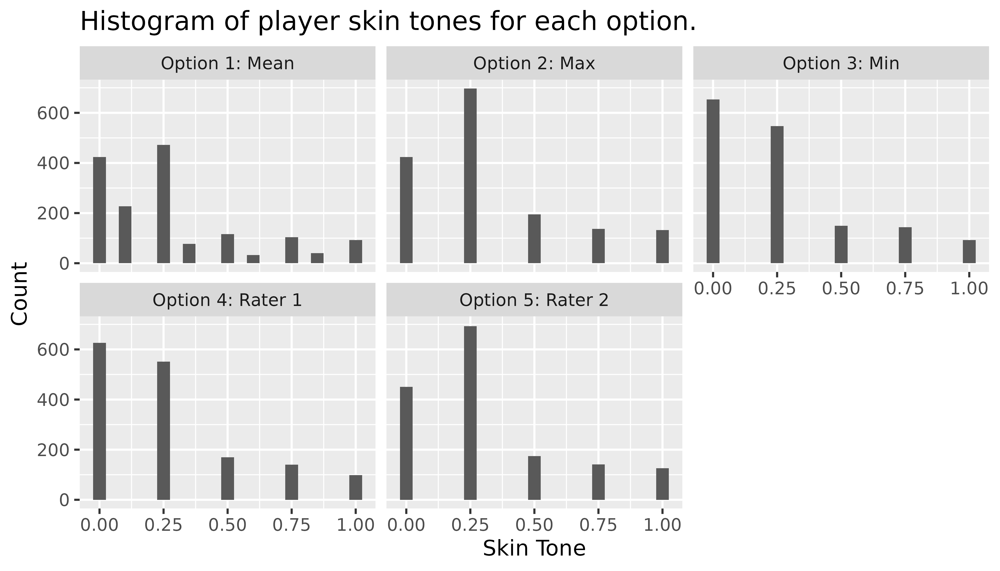

Suppose that we have a column col1 that we wish to
transform in three different ways and compute the five number summary of
the column after the transformations.
library(mverse)
## Loading required package: multiverse
## Loading required package: knitr
##
## Attaching package: 'mverse'
## The following object is masked from 'package:multiverse':
##
## execute_multiverse
## The following objects are masked from 'package:stats':
##
## AIC, BIC
library(tibble)
library(dplyr)
##
## Attaching package: 'dplyr'
## The following objects are masked from 'package:stats':
##
## filter, lag
## The following objects are masked from 'package:base':
##
## intersect, setdiff, setequal, union
library(ggplot2)
set.seed(6)
df <- tibble(col1 = rnorm(5, 0, 1), col2 = col1 + runif(5))create_multiverse of the data frame
mv <- create_multiverse(df)mutate_branch to transform
col1
# Step 2: create a branch - each branch corresponds to a universe
transformation_branch <- mutate_branch(col1 = col1,
col1_t1 = log(abs(col1 + 1)),
col1_t2 = abs(col1))add_mutate_branch to mv
mv <- mv |> add_mutate_branch(transformation_branch)execute_multiverse to execute the
transformations
mv <- execute_multiverse(mv)mv
extract to add the column to df_transformed
that labels transformations.
tidyverse to compute the summary and plot
the distribution of each transformation (universe)
df_transformed |>
group_by(transformation_branch_branch) |>
summarise(n = n(),
mean = mean(transformation_branch),
sd = sd(transformation_branch),
median = median(transformation_branch),
IQR = IQR(transformation_branch))
## # A tibble: 3 × 6
## transformation_branch_branch n mean sd median IQR
## <fct> <int> <dbl> <dbl> <dbl> <dbl>
## 1 col1 5 0.452 0.893 0.270 0.844
## 2 col1_t1 5 0.179 0.755 0.239 0.601
## 3 col1_t2 5 0.704 0.658 0.630 0.599
df_transformed |>
ggplot(aes(x = transformation_branch)) + geom_histogram(bins = 3) +
facet_wrap(vars(transformation_branch_branch))mverse to Fit Three Simple Linear
Regression of a Transformed Column
create_multiverse of the data frame
mv1 <- create_multiverse(df)formula_branch of the linear regression
models
formulas <- formula_branch(col2 ~ col1,
col2 ~ log(abs(col1 + 1)),
col2 ~ abs(col1))add_formula_branch to multiverse of data
frame
mv1 <- mv1 |> add_formula_branch(formulas)lm_mverse to compute linear regression models
across the multiverse
lm_mverse(mv1)summary to extract regression output
summary(mv1)
## # A tibble: 6 × 10
## universe formulas_branch term estimate std.error statistic p.value conf.low
## <fct> <fct> <chr> <dbl> <dbl> <dbl> <dbl> <dbl>
## 1 1 formulas_1 (Inter… 0.689 0.109 6.31 0.00803 0.342
## 2 1 formulas_1 col1 0.680 0.119 5.71 0.0106 0.301
## 3 2 formulas_2 (Inter… 0.863 0.159 5.43 0.0122 0.358
## 4 2 formulas_2 log(ab… 0.741 0.227 3.26 0.0471 0.0178
## 5 3 formulas_3 (Inter… 0.479 0.330 1.45 0.243 -0.573
## 6 3 formulas_3 abs(co… 0.734 0.360 2.04 0.134 -0.412
## # ℹ 2 more variables: conf.high <dbl>, formulas_branch_code <fct>Let’s compare using mverse to using
tidyverse and base R to fit the three models.
One way to do this using tidyverse is to create a list
of the model formulas then map the list to lm.
mod1 <- formula(col2 ~ col1)
mod2 <- formula(col2 ~ log(abs(col1 + 1)))
mod3 <- formula(col2 ~ abs(col1))
models <- list(mod1, mod2, mod3)
models |>
purrr::map(lm, data = df) |>
purrr::map(broom::tidy) |>
bind_rows()
## # A tibble: 6 × 5
## term estimate std.error statistic p.value
## <chr> <dbl> <dbl> <dbl> <dbl>
## 1 (Intercept) 0.689 0.109 6.31 0.00803
## 2 col1 0.680 0.119 5.71 0.0106
## 3 (Intercept) 0.863 0.159 5.43 0.0122
## 4 log(abs(col1 + 1)) 0.741 0.227 3.26 0.0471
## 5 (Intercept) 0.479 0.330 1.45 0.243
## 6 abs(col1) 0.734 0.360 2.04 0.134Using base R we can use lappy instead of
modfit <- lapply(models, function(x) lm(x, data = df))
lapply(modfit, function(x) summary(x)[4])
## [[1]]
## [[1]]$coefficients
## Estimate Std. Error t value Pr(>|t|)
## (Intercept) 0.6888352 0.1090963 6.314013 0.008029051
## col1 0.6795288 0.1189216 5.714092 0.010634165
##
##
## [[2]]
## [[2]]$coefficients
## Estimate Std. Error t value Pr(>|t|)
## (Intercept) 0.8630266 0.1588415 5.433258 0.01223797
## log(abs(col1 + 1)) 0.7409497 0.2272193 3.260945 0.04709792
##
##
## [[3]]
## [[3]]$coefficients
## Estimate Std. Error t value Pr(>|t|)
## (Intercept) 0.4789365 0.3303897 1.449611 0.2430335
## abs(col1) 0.7344512 0.3601450 2.039321 0.1341343In this example, we use a real dataset that demonstrates how
mverse makes it easy to define multiple definitions for a
column and compare the results of the different definitions. We combine
soccer player skin colour ratings by two independent raters
(rater1 and rater2) from soccer
dataset included in mverse.
The data comes from Silberzahn et al. (2014) and contains 146,028 rows of
player-referee pairs. For each player, two independent raters coded
their skin tones on a 5-point scale ranging from very light
skin (0.0) to very dark skin
(1.0). For the purpose of demonstration, we only use a
unique record per player and consider only those with both ratings.
library(mverse)
soccer_bias <- soccer[!is.na(soccer$rater1) & !is.na(soccer$rater2),
c("playerShort", "rater1", "rater2")]
soccer_bias <- unique(soccer_bias)
head(soccer_bias)
## playerShort rater1 rater2
## 1 lucas-wilchez 0.25 0.50
## 2 john-utaka 0.75 0.75
## 6 aaron-hughes 0.25 0.00
## 7 aleksandar-kolarov 0.00 0.25
## 8 alexander-tettey 1.00 1.00
## 9 anders-lindegaard 0.25 0.25We would like to study the distribution of the player skin tones but the two independent rating do not always match. To combine the two ratings, we may choose to consider the following options:
Tidyverse
Let’s first consider how you might study the five options using R
without mverse. First, we define the five options as
separate variables in R.
skin_option_1 <- (soccer_bias$rater1 + soccer_bias$rater2) / 2
skin_option_2 <- ifelse(soccer_bias$rater1 > soccer_bias$rater2,
soccer_bias$rater1,
soccer_bias$rater2)
skin_option_3 <- ifelse(soccer_bias$rater1 < soccer_bias$rater2,
soccer_bias$rater1,
soccer_bias$rater2)
skin_option_4 <- soccer_bias$rater1
skin_option_5 <- soccer_bias$rater2We can plot a histogram to study the distribution of the resulting
skin tone value for each option. Below is the histogram for the first
option (skin_option_1).
library(ggplot2)
ggplot(mapping = aes(x = skin_option_1)) +
geom_histogram(breaks = seq(0, 1, 0.2),
colour = "white") +
labs(title = "Histogram of player skin tones (Option 1: Mean).",
x = "Skin Tone", y = "Count")For the remaining four options, we can repeat the step above to examine the distributions, or create a new data frame combining all five options to use in a ggplot as shown below. In both cases, users need to take care of plotting all five manually.
skin_option_all <- data.frame(
x = c(skin_option_1,
skin_option_2,
skin_option_3,
skin_option_4,
skin_option_5),
Option = rep(
c("Option 1: Mean",
"Option 2: Max",
"Option 3: Min",
"Option 4: Rater 1",
"Option 5: Rater 2"),
each = nrow(df)
)
)
ggplot(data = skin_option_all) +
geom_histogram(aes(x = x), binwidth = 0.1) +
labs(title = "Histogram of player skin tones for each option.",
x = "Skin Tone", y = "Count") +
facet_wrap(. ~ Option)mverse
mverse
We now turn to mverse to create the five options above.
First, we define an mverse object with the dataset. Note
that mverse assumes a single dataset for each multiverse
analysis.
soccer_bias_mv <- create_multiverse(soccer_bias)A branch in mverse refers to different
modelling or data wrangling decisions. For example, a mutate branch -
analogous to mutate method in tidyverse’s data
manipulation grammar, lets you define a set of options for defining a
new column in your dataset.
You can create a mutate branch with mutate_branch(). The
syntax for defining the options inside mutate_branch()
follows the tidyverse’s grammar as well.
skin_tone <- mutate_branch(
(rater1 + rater2) / 2,
ifelse(rater1 > rater2, rater1, rater2),
ifelse(rater1 < rater2, rater1, rater2),
rater1,
rater2
)Then add the newly defined mutate branch to the mv
object using add_mutate_branch().
soccer_bias_mv <- soccer_bias_mv |> add_mutate_branch(skin_tone)Adding a branch to a mverse object multiplies the number
of environments defined inside the object so that the environments
capture all unique analysis paths. Without any branches, a
mverse object has a single environment. We call these
environments universes. For example, adding the
skin_tone mutate branch to mv results in
universes inside mv. In each universe, the analysis dataset
now has a new column named skin_tone - the name of the
mutate branch object.
You can check that the mutate branch was added with
summary() method for the mv object. The method
prints a multiverse table that lists all universes with
branches as columns and corresponding options as values defined in the
mv object.
summary(soccer_bias_mv)
## # A tibble: 5 × 3
## universe skin_tone_branch skin_tone_branch_code
## <fct> <fct> <fct>
## 1 1 skin_tone_1 (rater1 + rater2)/2
## 2 2 skin_tone_2 ifelse(rater1 > rater2, rater1, rater2)
## 3 3 skin_tone_3 ifelse(rater1 < rater2, rater1, rater2)
## 4 4 skin_tone_4 rater1
## 5 5 skin_tone_5 rater2At this point, the values of the new column skin_tone
are only populated in the first universe. To populate the values for all
universes, we call execute_multiverse.
execute_multiverse(soccer_bias_mv)In this section, we now examine and compare the distributions of
skin_tone values between different options. You can extract
the values in each universe using extract(). By default,
the method returns all columns created by a mutate branch across all
universes. In this example, we only have one column -
skin_tone.
branched <- mverse::extract(soccer_bias_mv)branched is a dataset with skin_tone
values. If we want to extract the skin_tone values that
were computed using the average of the two raters then we can filter
branched by skin_tone_branch values equal to
(rater1 + rater2) / 2. Alternatively, we could filter by
universe == 1.
branched |>
filter(skin_tone_branch == "(rater1 + rater2) / 2") |>
head()
## [1] universe skin_tone skin_tone_branch
## <0 rows> (or 0-length row.names)The distribution of each method for calculating skin tone can be
computed by grouping the levels of skin_tone_branch.
branched |>
group_by(skin_tone_branch) |>
summarise(n = n(),
mean = mean(skin_tone),
sd = sd(skin_tone),
median = median(skin_tone),
IQR = IQR(skin_tone))
## # A tibble: 5 × 6
## skin_tone_branch n mean sd median IQR
## <fct> <int> <dbl> <dbl> <dbl> <dbl>
## 1 skin_tone_1 1585 0.290 0.291 0.25 0.375
## 2 skin_tone_2 1585 0.320 0.297 0.25 0.5
## 3 skin_tone_3 1585 0.259 0.295 0.25 0.25
## 4 skin_tone_4 1585 0.269 0.297 0.25 0.5
## 5 skin_tone_5 1585 0.310 0.297 0.25 0.5Selecting a random subset of rows data is useful when the multiverse
is large. The frow parameter in extract()
provides the option to extract a random subset of rows in each universe.
It takes a value between 0 and 1 that represent the fraction of values
to extract from each universe. For example, setting
frow = 0.05 returns approximately 5% of values from each
universe (i.e., skin_tone_branch in this case).
frac <- extract(soccer_bias_mv, frow = 0.05)So, each universe is a 20% of the random sample.
frac |>
group_by(universe) |>
tally() |>
mutate(percent = (n / sum(n)) * 100)
## # A tibble: 5 × 3
## universe n percent
## <fct> <int> <dbl>
## 1 1 79 20
## 2 2 79 20
## 3 3 79 20
## 4 4 79 20
## 5 5 79 20Finally, we can construct plots to compare the distributions of
skin_tone in different universes. For example, you can
overlay density lines on a single plot.
branched |>
ggplot(mapping = aes(x = skin_tone, color = universe)) +
geom_density(alpha = 0.2) +
labs(title = "Density of player skin tones for each option.",
x = "Skin Tone", y = "Density") +
scale_color_discrete(
labels = c("Option 1: Mean",
"Option 2: Max",
"Option 3: Min",
"Option 4: Rater 1",
"Option 5: Rater 2"),
name = NULL
)
Another option is the use ggplot’s
facet_grid function to generate multiple plots in a grid.
facet_wrap(. ~ universe) generates individual plots for
each universe.
branched |>
ggplot(mapping = aes(x = skin_tone)) +
geom_histogram(position = "dodge", bins = 21) +
labs(title = "Histogram of player skin tones for each option.",
y = "Count", x = "Skin Tone") +
facet_wrap(
. ~ universe,
labeller = labeller(
universe = c(`1` = "Option 1: Mean",
`2` = "Option 2: Max",
`3` = "Option 3: Min",
`4` = "Option 4: Rater 1",
`5` = "Option 5: Rater 2")
)
)